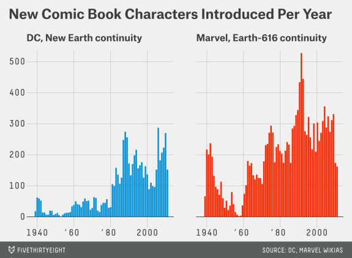
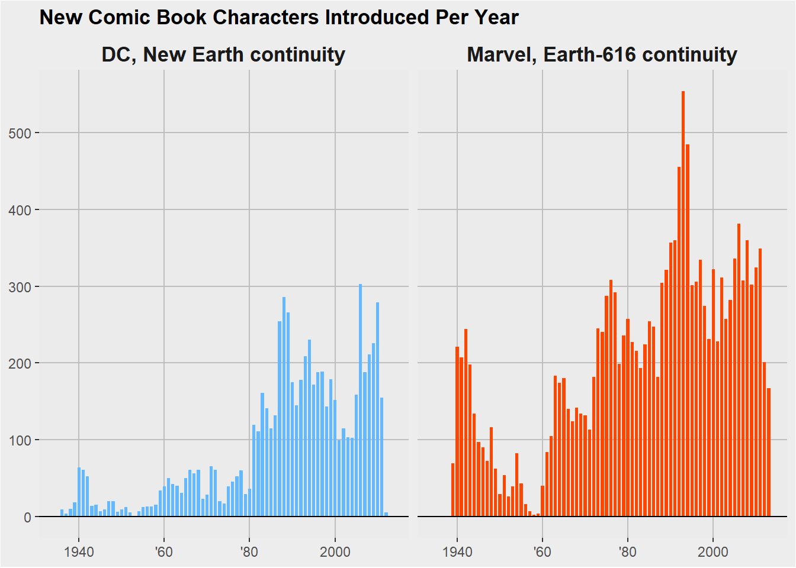

The graph was first created for the FiveThirtyEight article “Comic Books Are Still Made By Men, For Men And About Men” by Walt Hickey in October of 2014
This is the plot I will be reproducing:

Read in data set
dcdata <- read.csv("./data/dc-wikia-data.csv")
marveldata <- read.csv("./data/marvel-wikia-data.csv")Load libraries needed
#combine data into a single data set
dcdata$type <- "DC"
marveldata$type <- "Marvel"
colnames(marveldata)[colnames(marveldata)=="Year"] <- "YEAR"
comicdata<-rbind(marveldata, dcdata)
#Want a total number of characters introduced each year for marvel and dc separately
labels <- c(DC="DC, New Earth continuity", Marvel="Marvel, Earth-616 continuity")
ggplot(comicdata) +
geom_bar(aes(x=YEAR, fill=type), width = 0.73) + scale_fill_manual(values=c("steelblue1", "orangered")) +
facet_grid(.~type, labeller = labeller(type=labels)) +
theme(strip.text.x = element_text(size=13, face="bold"),
strip.text.y = element_text(size=13, face="bold"),
strip.background = element_rect(fill = "grey93")) +
ggtitle("New Comic Book Characters Introduced Per Year") +
theme(plot.title = element_text(lineheight = .8, face="bold"),
axis.title.x = element_blank(),
axis.title.y = element_blank()) +
theme(plot.background = element_rect(fill="grey93"),
panel.grid.major = element_line(color="grey"),
panel.grid.minor = element_line(color="grey"),
legend.position = "none") +
geom_hline(yintercept = 0, color = "black")+
scale_y_continuous(breaks=seq(0,500,100)) +
scale_x_continuous(breaks=c(1940,1960,1980,2000),
labels=c("1940","'60","'80","2000")) +
theme(panel.grid.minor.y = element_blank(), panel.grid.minor.x = element_blank())## Warning: Removed 884 rows containing non-finite values (stat_count).
I learned after the fact that fivethrityeight has its own theme that I could have (should have) used instead of recreating the theme by hand, but here we are!